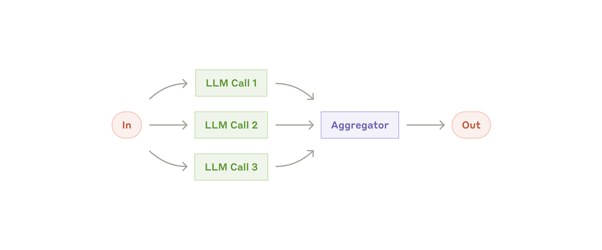
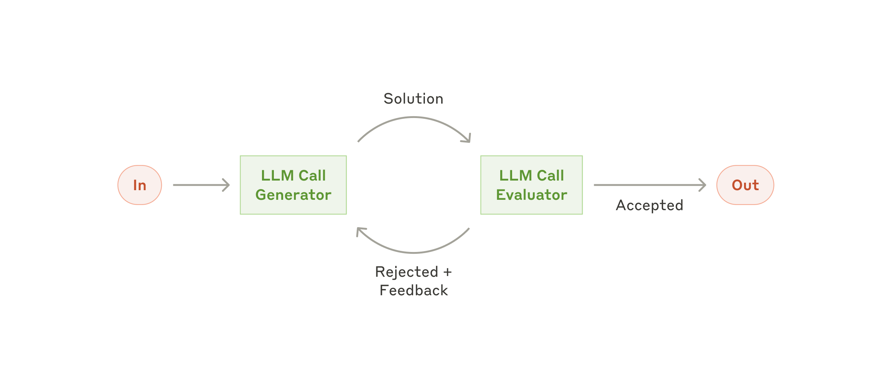
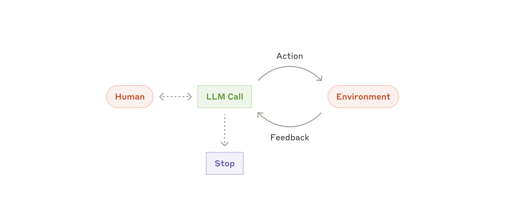
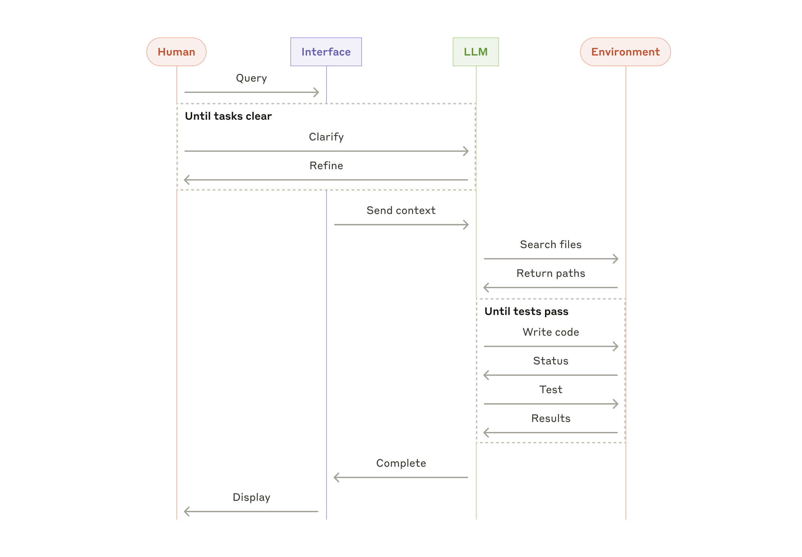

我們和數十個團隊合作過，他們橫跨不同產業，都在打造大型語言模型（LLM, large language model）代理（agent）。結果一致：最成功的實作採用簡單、可組合的模式（composable patterns），不是複雜的框架（frameworks）。
註：本文描述的工具樣貌，從 2024 年 12 月至今已經變了不少。我們目前的做法請參閱 我們如何打造 Claude 託管代理（Claude Managed Agents） 以及 託管代理（Managed Agents）文件。
過去一年，我們和數十個團隊合作，他們橫跨不同產業，都在打造大型語言模型（LLM）代理（agent）。結果一致：最成功的實作沒有用複雜的框架或專門的函式庫，而是用簡單、可組合的模式（composable patterns）建構。
這篇文章分享我們和客戶合作、以及自己打造代理（agents）時學到的經驗，也給開發者一些打造高效代理（effective agents）的實務建議。
什麼是代理（What are agents?）
「代理（Agent）」有好幾種定義方式。有些客戶把它定義成完全自主的系統，能在長時間內獨立運作、用各種工具完成複雜任務。也有人用這個詞描述比較規範性、依循預先定義工作流（predefined workflows）的實作。在 Anthropic，我們把這些都歸為代理系統（agentic systems），但在架構上做了一個重要區分：工作流（workflows）與代理（agents）。
- 工作流（Workflows）是透過預先定義的程式碼路徑（predefined code paths）編排（orchestrate）LLM 與工具的系統。
- 代理（Agents）則是 LLM 能動態指揮自身流程與工具使用、持續掌控怎麼完成任務的系統。
接下來我們詳細探討這兩類代理系統（agentic systems）。附錄 1（「實務中的代理，Agents in Practice」）會描述兩個領域，客戶在這些領域特別感受到這類系統的價值。
何時（以及何時不）該使用代理（When (and when not) to use agents）
用 LLM 建構應用時，我們建議先找最簡單可行的解法，只在必要時才增加複雜度。這也意味著，有時候根本不該建構代理系統（agentic systems）。代理系統往往拿延遲（latency）與成本，換取更好的任務表現，你得想清楚這種取捨（tradeoff）什麼時候才合理。
確實需要更多複雜度時，工作流（workflows）為定義明確的任務提供可預測性與一致性；需要彈性與由模型驅動的決策（model-driven decision-making），而且得規模化時，代理（agents）是更好的選擇。但對許多應用來說，用檢索（retrieval）與脈絡內範例（in-context examples）把單次 LLM 呼叫調好，通常就夠了。
何時以及如何使用框架（When and how to use frameworks）
有許多框架（frameworks）讓代理系統（agentic systems）更容易實作，包括：
- Claude Agent SDK；
- AWS 的 Strands Agents SDK；
- Rivet，拖放式（drag and drop）的 GUI LLM 工作流建構工具；
- Vellum，另一個建構與測試複雜工作流的 GUI 工具。
這些框架簡化標準的低階任務（呼叫 LLM、定義與解析工具、把呼叫串接起來），讓起步容易得多。但它們往往多出好幾層抽象（abstraction layers），可能遮蔽底層的提示（prompts）與回應（responses），更難除錯。設定明明更簡單就夠用時，它們也容易讓人忍不住添加複雜度。
我們建議開發者直接從 LLM API 開始：許多模式幾行程式碼就能實作。如果還是用了框架，請確認你懂底層的程式碼。對「底下到底發生什麼」想錯，是客戶常犯的錯誤來源。
範例實作請見我們的 cookbook。
積木、工作流與代理（Building blocks, workflows, and agents）
這一節探討我們在生產環境中見過的常見代理系統（agentic systems）模式。從最基礎的積木講起：增強型 LLM（augmented LLM）。接著逐步增加複雜度，從單純的組合式工作流（compositional workflows）一路到自主代理（autonomous agents）。
積木：增強型 LLM（Building block: The augmented LLM）
代理系統（agentic systems）的基本積木，是一個加上檢索（retrieval）、工具（tools）與記憶（memory）等擴充的 LLM。我們目前的模型能主動運用這些能力：自己產生搜尋查詢、選擇合適的工具、判斷該保留哪些資訊。

實作時建議聚焦兩件事：把這些能力調整到貼合你的使用情境，並確保它們給你的 LLM 一個簡單、文件齊全（well-documented）的介面。實作這些擴充有很多方式，其中一種是我們近期發佈的 Model Context Protocol；開發者只要寫一份簡單的 client 實作，就能接上持續成長的第三方工具生態系。
後文我們都假設每次 LLM 呼叫都能取用這些擴充能力。
工作流：提示鏈接（Workflow: Prompt chaining）
提示鏈接（Prompt chaining）把任務拆成一連串步驟，每一次 LLM 呼叫處理前一次的輸出。中間步驟可以加入程式化的檢查（見下圖的「閘門（gate）」），確認流程還在正軌上。

何時使用此工作流：任務能輕鬆、乾淨地拆成固定子任務（subtasks）時最理想。主要目標是用延遲換取更高的準確度，讓每次 LLM 呼叫都是更簡單的任務。
適合使用提示鏈接的例子：
- 產生行銷文案，再翻譯成另一種語言。
- 先寫文件大綱，檢查大綱是否符合特定標準，再依大綱寫出文件。
工作流：路由（Workflow: Routing）
路由（Routing）把輸入分類，導向專門的後續任務。這個工作流能做到關注點分離（separation of concerns），也讓你建構更專門的提示。少了它，為了某一類輸入調校，可能反而害到其他輸入的表現。

何時使用此工作流：複雜任務裡有明顯不同、各自更適合分別處理的類別，而且分類能做得準（不管靠 LLM 還是更傳統的分類模型／演算法），路由就運作得很好。
適合使用路由的例子：
- 把不同類型的客服查詢（一般問題、退款請求、技術支援）導向不同的下游流程、提示與工具。
- 簡單／常見的問題路由到較小、更省成本的模型（如 Claude Haiku 4.5），困難／不尋常的問題交給能力更強的模型（如 Claude Sonnet 4.5），換取最佳表現。
工作流：平行化（Workflow: Parallelization）
LLM 有時能同時處理一項任務，再用程式化方式彙整輸出。這種工作流叫平行化（parallelization），有兩種主要變化：
- 分段（Sectioning）：把任務拆成可平行執行的獨立子任務。
- 投票（Voting）：同一個任務跑很多次，取得多樣的輸出。

何時使用此工作流：拆出來的子任務能為了速度平行處理，或需要多個觀點、多次嘗試才有足夠信心時，平行化很有效。複雜任務牽涉多重考量時，LLM 通常表現得更好，如果每個考量都交給獨立的 LLM 呼叫處理，注意力就能集中在單一面向。
適合使用平行化的例子：
- 分段（Sectioning）：
- 實作護欄（guardrails），一個模型實例處理使用者查詢，另一個篩檢查詢裡有沒有不當內容或請求。這通常比同一次 LLM 呼叫兼顧護欄與主要回應表現更好。
- 自動化評估（evals）來評量 LLM 表現，每次 LLM 呼叫評估模型在某個給定提示上表現的其中一個面向。
- 投票（Voting）：
- 審查一段程式碼有沒有弱點，用幾個不同的提示各自審查，發現問題就標記那段程式碼。
- 評估某段內容是否不當，多個提示分別看不同面向，或設不同的投票門檻，在偽陽性（false positives）與偽陰性（negatives）之間取平衡。
工作流：協調者－工作者（Workflow: Orchestrator-workers）
協調者－工作者（orchestrator-workers）工作流裡，一個中央 LLM 動態拆解任務、分派給工作者 LLM（worker LLMs），再彙整結果。

何時使用此工作流：複雜任務需要哪些子任務無法預測時，這個工作流很適合（例如寫程式，要改幾個檔案、每個檔案怎麼改，往往取決於任務本身）。它在拓撲上跟平行化很像，關鍵差別在彈性：子任務不是預先定義的，而是協調者（orchestrator）看當下的輸入決定。
適合使用協調者－工作者的例子：
- 每次都要對多個檔案做複雜變更的程式開發產品。
- 要從多個來源蒐集與分析資訊、找出可能相關內容的搜尋任務。
工作流：評估者－最佳化者（Workflow: Evaluator-optimizer）
評估者－最佳化者（evaluator-optimizer）工作流裡，一次 LLM 呼叫產生回應，另一次在迴圈中給評估與回饋。

何時使用此工作流：評估標準明確，而且反覆精進能帶來可衡量的價值時，這個工作流特別有效。符合的兩項跡象：第一，人類把回饋講清楚之後，LLM 的回應能明顯變好；第二，LLM 自己也給得出這種回饋。這很像人類作者寫出一份精煉文件時，會經歷的反覆修改過程。
適合使用評估者－最佳化者的例子：
- 文學翻譯：有些細微之處，負責翻譯的 LLM 起初抓不到，評估者 LLM 能給出有用的評論。
- 需要多輪搜尋與分析才能蒐集完整資訊的複雜搜尋任務，由評估者判斷要不要繼續搜。
代理（Agents）
LLM 在幾項關鍵能力上愈來愈成熟，包括理解複雜輸入、推理與規劃（reasoning and planning）、可靠地使用工具，以及從錯誤中復原，代理（agents）也開始出現在生產環境。代理的運作從人類使用者下指令、或與人類來回討論開始。任務明確之後，代理就獨立規劃與運作，需要更多資訊或判斷時再回頭問人。執行過程中，代理每一步都必須從環境取得「真實依據（ground truth）」（例如工具呼叫結果或程式碼執行結果），才能評估自己的進展。之後代理可以在檢查點（checkpoints）暫停，或遇到阻礙時停下來取得人類回饋。任務通常在完成時終止，不過也常加入停止條件（stopping conditions，例如最大迭代次數）來維持控制。
代理能處理精密的任務，但實作往往相當直接：通常就是 LLM 在迴圈裡，依據環境回饋使用工具。所以，把工具集（toolsets）和它們的文件設計得清楚、想得仔細，就很重要。工具開發的最佳實務，我們在附錄 2（「為你的工具做提示工程，Prompt Engineering your Tools」）另外說明。

何時使用代理：問題是開放式的、步驟數難以或不可能預測，也無法硬編碼（hardcode）出一條固定路徑時，就可以用代理。LLM 可能會跑很多回合，你得對其決策有一定程度的信任。代理的自主性，讓它很適合在受信任的環境中擴展任務規模。
代理的自主性質意味著更高的成本，還有錯誤層層累積（compounding errors）的可能。我們建議在沙箱環境（sandboxed environments）裡大量測試，並加上適當的護欄（guardrails）。
適合使用代理的例子：
以下例子來自我們自己的實作：
- 一個程式開發代理（coding agent），用來解決 SWE-bench 任務，這些任務要依據描述編輯多個檔案；
- 我們的 「電腦使用（computer use）」參考實作，Claude 用它操作電腦完成任務。

組合與客製這些模式（Combining and customizing these patterns）
這些積木並非強制性的規範。它們是常見模式，開發者可以依不同使用情境調整、組合。跟任何 LLM 功能一樣，關鍵是衡量表現、反覆改進實作。再強調一次：只有在複雜度明確證明能改善結果時，才該考慮加進來。
總結（Summary）
LLM 領域的成功，不在於系統造得多精密，而在於為你的需求造出正確的系統。從簡單的提示開始，用完整的評估把它們調好，等更簡單的解法真的不夠了，再加入多步驟的代理系統（agentic systems）。
在實作代理時，我們試著遵循三個核心原則：
- 代理的設計保持簡單（simplicity）。
- 明確展示代理的規劃步驟，優先做到透明（transparency）。
- 靠徹底的文件與測試（documentation and testing），仔細打造你的代理－電腦介面（ACI, agent-computer interface）。
框架能幫你快速起步，但要進到生產環境時，請不要猶豫，直接減少抽象層，用基本元件來建構。照這些原則做，你造出的代理不只強大，也可靠、好維護，而且使用者願意信任。
致謝（Acknowledgements）
本文由 Erik S. 與 Barry Zhang 撰寫。內容來自我們在 Anthropic 打造代理的經驗，以及客戶分享的寶貴洞見，我們非常感謝。
附錄 1：實務中的代理（Appendix 1: Agents in practice）
和客戶合作下來，我們看到兩個對 AI 代理特別有前景的應用，也印證了上面那些模式的實務價值。這兩個應用都說明了一件事：任務如果同時需要對話與行動、成功標準明確、能形成回饋迴路（feedback loops），又有人為監督（human oversight）把關，代理能帶來的價值最大。
A. 客戶支援（Customer support）
客戶支援把熟悉的聊天機器人介面，結合工具整合帶來的增強能力。這對比較開放式的代理來說是自然的選擇，因為：
- 支援互動自然照著對話流程走，同時要取用外部資訊、實際執行動作；
- 可以整合工具，取得客戶資料、訂單紀錄與知識庫文章；
- 發退款、更新工單這類動作，能用程式處理；以及
- 成功與否，可以從使用者定義的解決結果（resolutions）清楚衡量。
已經有好幾家公司用按用量計價（usage-based pricing models）證明這條路可行：只對成功解決的結果收費。他們對自家代理的成效顯然有信心。
B. 程式開發代理（Coding agents）
軟體開發領域展現了 LLM 驚人的潛力，能力從程式碼補全（code completion）一路演進到自主解決問題。代理在這裡特別有效，因為：
- 程式碼解法可以用自動化測試驗證；
- 代理能把測試結果當回饋，反覆改進解法；
- 問題空間定義明確、有結構；以及
- 輸出品質可以客觀衡量。
在我們自家的實作中，代理現在只憑 pull request 的描述，就能解決 SWE-bench Verified 基準測試裡真實的 GitHub 議題。不過，自動化測試雖然能驗證功能，人為審查（human review）仍然是關鍵，才能確保解法符合更上層的系統需求。
附錄 2：為你的工具做提示工程（Appendix 2: Prompt engineering your tools）
不管你建構的是哪一種代理系統（agentic system），工具大概都是重要的部分。工具（Tools）讓 Claude 能與外部服務及 API 互動，做法是在我們的 API 裡指定工具的完整結構與定義。Claude 打算呼叫工具時，會在 API 回應中夾帶一個 工具使用區塊（tool use block）。工具定義與規格該得到的提示工程（prompt engineering）心力，跟你整體的提示一樣多。這段簡短的附錄說明怎麼為工具做提示工程。
同一個動作，往往有好幾種指定方式。例如一次檔案編輯，你可以寫 diff，也可以把整個檔案重寫一遍。結構化輸出（structured output）也一樣，程式碼可以放在 markdown 裡，也可以放在 JSON 裡。在軟體工程中，這類差別只是表面的，兩種可以無損互轉。但有些格式對 LLM 就是難寫得多。寫 diff，得在新程式碼寫出來之前，就先知道區塊標頭（chunk header）裡有幾行在變。把程式碼放進 JSON（相較於 markdown），則要對換行與引號多做一層跳脫處理（escaping）。
決定工具格式時，我們的建議是：
- 給模型足夠的 token 去「思考（think）」，免得它把自己逼進死角。
- 格式盡量貼近模型在網路上自然看過的樣子。
- 不要有格式上的「額外負擔（overhead）」，例如得準確數出幾千行程式碼，或得為它寫的每一段程式碼做字串跳脫（string-escaping）。
有個經驗法則：想想人機介面（HCI, human-computer interfaces）投注了多少心力，就該在打造良好的代理－電腦介面（ACI, agent-computer interfaces）上投入同樣多。幾個實作上的想法：
- 站在模型的立場想。看描述和參數，這個工具怎麼用是顯而易見，還是得想一下？如果是後者，對模型大概也是。好的工具定義通常會附上使用範例、邊界情況（edge cases）、輸入格式要求，以及跟其他工具之間清楚的界線。
- 參數名稱或描述怎麼改，能讓事情更一目了然？把它想成是在為團隊裡的初階開發者寫一份好 docstring。工具一多、又彼此相似時，這點尤其重要。
- 測試模型怎麼用你的工具：在我們的 workbench 裡跑大量範例輸入，看模型在哪裡出錯，再反覆修。
- 幫你的工具做 防呆（Poka-yoke）。調整引數（arguments），讓錯誤更難發生。
打造 SWE-bench 用的代理時，我們花在調工具上的時間，其實比花在整體提示上的還多。例如我們發現，代理離開根目錄之後，模型用相對檔案路徑（relative filepaths）的工具就會出錯。我們把工具改成一律要求絕對檔案路徑（absolute filepaths），結果模型用得毫無問題。